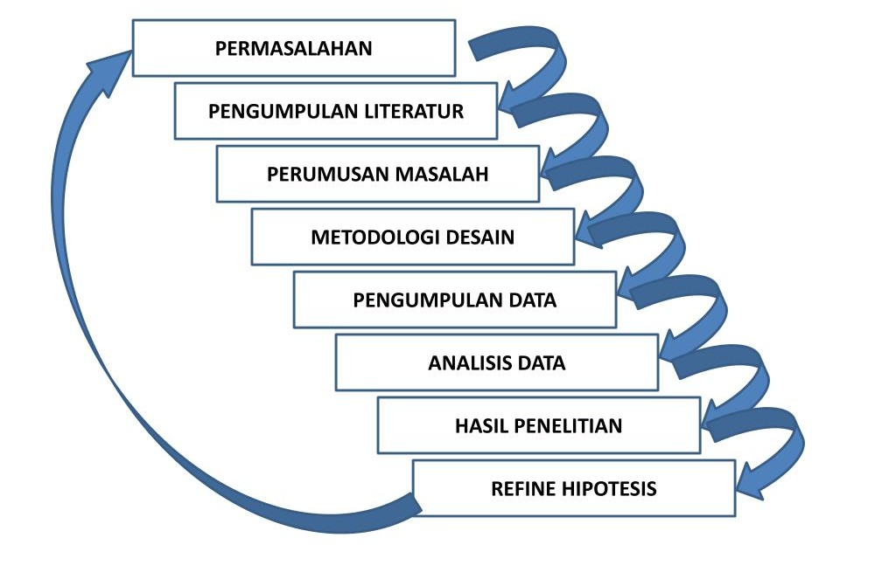

Ringkasan Fokus Riset
Sebagian besar publikasi pada halaman ini berkaitan dengan riset kecerdasan buatan & Internet of Things (IoT) yang dikembangkan di lingkungan Departemen Teknik Informatika. Beberapa model klasifikasi yang diuji mencatat akurasi > 90% pada data validasi, sementara nilai loss pada proses pelatihan ditekan hingga < 0.05 sebelum model dinyatakan siap diterapkan pada studi kasus lapangan.
Bidang Keahlian Dosen
-
Dr. Ir. Ingrid Nurtanio, M.T.
- Visi komputer
- Teknik biomedik
- Pengolahan citra
-
Elly Warni, S.T., M.T.
- Data mining
- Rekayasa perangkat lunak
-
Prof. Dr. Eng. Muhammad Niswar, S.T., M.IT.
- Jaringan komputer
- Pemrograman web
-
Prof. Dr. Amil Ahmad Ilham, S.T., M.IT.
- Sistem informasi
- Big data
- Cloud computing
Alur Metodologi Riset

Tabel Publikasi Ilmiah
| No | Nama Dosen | Judul Publikasi | Detail Publikasi | Tautan | ||
|---|---|---|---|---|---|---|
| Tahun | Jenis | Sitasi | ||||
| 1 | Dr. Ir. Ingrid Nurtanio, M.T. | Klasifikasi Citra Medis Berbasis Convolutional Neural Network | 2024 | Jurnal Internasional | 12 | Tautan artikel |
| 2 | Optimasi Model Pengolahan Citra pada Data Tidak Seimbang | 2023 | Prosiding Seminar Nasional | 5 | Tautan artikel | |
| 3 | Elly Warni, S.T., M.T. | Kerangka Pengujian Otomatis untuk Aplikasi Web Skala Menengah | 2025 | Jurnal Nasional Terakreditasi | 8 | Tautan artikel |
| 4 | Prof. Dr. Eng. Muhammad Niswar, S.T., M.IT. | Arsitektur Keamanan Jaringan pada Infrastruktur IoT Kampus | 2022 | Jurnal Internasional | 20 | Tautan artikel |
| 5 | Studi Kasus Penerapan Internet of Things pada Kota Cerdas | 2024 | Book Chapter | 3 | Tautan artikel | |
| 6 | Prof. Dr. Amil Ahmad Ilham, S.T., M.IT. | Analitik Data Skala Besar untuk Prediksi Tren Akademik | 2025 | Jurnal Internasional | 15 | Tautan artikel |
| Total publikasi terdata: 6 judul, periode 2022–2025. | ||||||